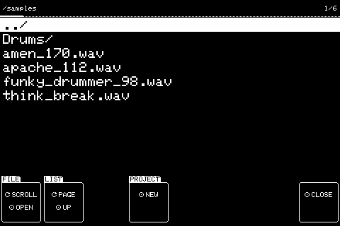
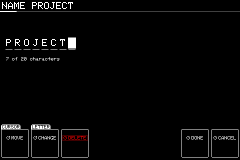
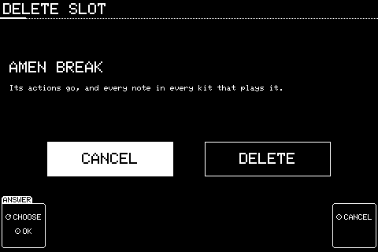
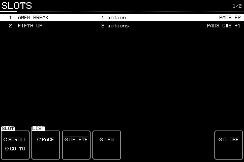
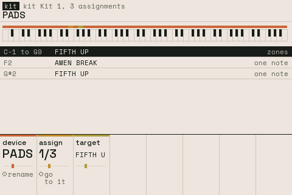
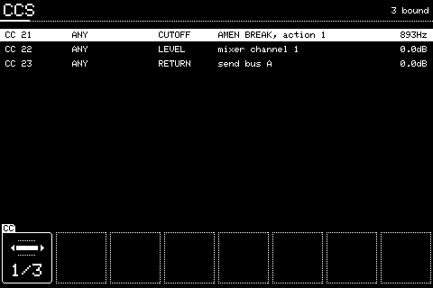
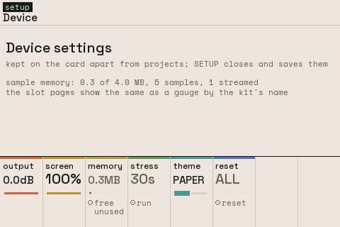

Chapter 8
Project and files
8.1 Browser
BROWSE, or push SAMPLE on SAMPLE.

Folders and WAVs on the card, and projects in /projects. Resting on a WAV for a moment plays it. Picking a sample from BROWSE asks where it goes. MODE or BROWSE closes.
| Knob | Setting | Turn | Push |
|---|---|---|---|
| 1 | FILE | Moves through the list | OPEN a folder, or pick a WAV or project. Shift + push goes UP a folder |
| 2 | LIST | A page at a time | UP a folder |
| 3 | - | DELETE the project file picked (asks first; only from BROWSE) | |
| 4 | PROJECT | NEW: start an empty project (asks first) | |
| 8 | - | CLOSE |
Knobs not listed do nothing here. Shift + push puts most settings back to how a new one has them.
8.2 Naming
Shift + SETUP for the first time, or Shift + SETUP from SETUP; also NAME, DEVICE, ARRANGE's renames.

Text entry with the knobs.
| Knob | Setting | Turn | Push |
|---|---|---|---|
| 1 | CURSOR | Moves along the name | |
| 2 | LETTER | Changes the letter at the cursor | |
| 3 | - | DELETE the letter | |
| 7 | - | DONE | |
| 8 | - | CANCEL |
Knobs not listed do nothing here. Shift + push puts most settings back to how a new one has them.
8.3 Question
Deleting a slot or project, starting a new project, placing a sample.

Asks first, with CANCEL picked, so pushing twice by accident never deletes anything.
| Knob | Setting | Turn | Push |
|---|---|---|---|
| 1 | ANSWER | Picks CANCEL or the action | OK: does what's picked |
| 8 | - | CANCEL |
Knobs not listed do nothing here. Shift + push puts most settings back to how a new one has them.
8.4 SLOTS
SLOTS.

Every slot in the project, whether a kit plays it or not, with what plays it.
| Knob | Setting | Turn | Push |
|---|---|---|---|
| 1 | SLOT | Moves through the list | GO TO it: selects it and shows its pages |
| 2 | LIST | A page at a time | |
| 3 | - | DELETE the slot (asks first) | |
| 4 | - | NEW slot | |
| 8 | - | CLOSE |
Knobs not listed do nothing here. Shift + push puts most settings back to how a new one has them.
8.5 Inputs overview
KIT.

Everything the live kit plays from one device: the keyboard strip shows which keys are taken, the list below names each. KIT or MODE closes.
| Knob | Setting | Turn | Push |
|---|---|---|---|
| 1 | DEVICE | Which device is shown, or ANY | Renames the device |
| 2 | ASSIGN | Picks an assignment | GO TO IT: shows its slot |
| 3 | TARGET | Changes which slot the picked assignment plays |
Knobs not listed do nothing here. Shift + push puts most settings back to how a new one has them.
8.6 CCS
Shift + KIT.

Every controller CC bound with LEARN, what it sets and its value. A bound setting shows a CC tag on its column. KIT or LEARN closes.
Knobs 2 to 5 set how the picked CC moves its setting. PICKUP stops a knob making the setting jump: it does nothing until it reaches the setting's value. Turning a panel knob makes it wait to catch up again.
| Knob | Setting | Turn | Push |
|---|---|---|---|
| 1 | CC | Moves through the bindings | Shift + push removes the one picked |
| 2 | MIN | Where the setting is with the CC at its bottom, 0 to 100% of its range (Shift: steps of 1) | |
| 3 | MAX | Where it is with the CC at its top. MIN above MAX turns it round | |
| 4 | CURVE | LINEAR, EXP (more travel at the bottom) or LOG (more at the top) | |
| 5 | MODE | ABSOLUTE, PICKUP, RELATIVE (an endless encoder sending steps: 1 to 63 up, 65 to 127 down) or FINE (14-bit: a CC under 32 paired with CC+32) |
Knobs not listed do nothing here. Shift + push puts most settings back to how a new one has them.
8.7 SETUP
SETUP.

Device settings, kept on the card apart from any project. SETUP or MODE closes and saves them.
| Knob | Setting | Turn | Push |
|---|---|---|---|
| 1 | OUTPUT | Every output's level, 0dB down to -60dB (Shift: 0.1dB steps) | |
| 2 | SCREEN | Backlight brightness | |
| 3 | MEMORY | Shows sample memory in use | FREE UNUSED: frees samples nothing plays, after stopping everything |
| 4 | STRESS | RUN: the 30 second stress test, showing audio CPU | |
| 5 | THEME | The screen's colours: PAPER or DARK | |
| 6 | RESET | RESET, after asking: every setting here back to new, and an empty project. A named project's changes are saved first; files on the card stay |
Knobs not listed do nothing here. Shift + push puts most settings back to how a new one has them.